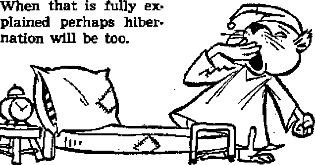

COMPROMISING AMERICANISM TO EXALT CATHOLICISM Weighing the merits of a U.S. ambassador to the Vatican
Do emergencies justify scrapping democracy?
If listeners do not enjoy you there is a reason I
Where we get it, how we use it, why protect it
JANUARY 8, 1952 semimonthly
THE MISSION OF THIS JOURNAL
New* source* that ar* able to keep you awake to the vital of our time* muat be unfettered by censorship and selfish interests. "Awake P* has no fetters. It recognizes facts, faces facts, la free to publish facts. It is dot bound by political ambitions or obligations; it Is unhampered by advertisers whose toes must not be trodden on; Lt la unprejudiced by traditional dreeds. This journal keeps itself free that it may speak freely to you. But it does not abuse its freedom. It maintains integrity to truth.
"Awake I** uses the regular news channels, but Is not dependent on them. Its own correspondents are on all continents, in scores of nations. From the four comers of the earth their uncensored, on-the«scenes reports come io you through these columns. This journal’s viewpoint la not narrow, but is international. It is read in many nations, in many languages* by persons of all ages. Through its pages many fields of knowledge pass in review—government, commerce, religion, history, geography, science, social conditions, natural wonders—why, its coverage is aS broad as the earth and as high as the heavens.
“Awake I” pledges itself to righteous principles, to exposing hidden foes and subtle dangers, to championing freedom for all* to comforting mourners and strengthening those disheartened by the failures of a delinquent world, rejecting sure hope for the estabUahcneni cf a righteous New World.
Get acquainted with “Awake I’* Keep awake by reading ' Awake 1”
Pububhid Semimonthly Bt WATCHTOWER BIBLE AND TRACT SOCIETY, INC, 117 Adama Street Brooklyn 1, N, Y.f 0, B. a,
N, H, Knoeb, PrMident Ghani Suitsh, Secretary
Printing this Jmub; 976,000 Five cents a copy
Lasfaa*** la wilrt Uh auulaa li fttlhhd; SmjauwniiU—Afrit*™. EasJlsb, Flnnlib, German, NornsJaii, fipaatth. Monthly—Daalsh, buck, Gnek, PortugUBK, Swwdttb, Ukrainian.
. Offices Taarly jutecrljrtloc Bate
AMtrfea. UX, 117 Adams St., Brooklyn 1. N ’T. >1 MMli. 11 BtnstordBd., BtntbteH, N.S.W, 8g Canada, to Irwin An.. Toronto 5, Ontario a i
EnitMtf. 34 Cnwn Ttrnca, London, W. 3 7,
Savtt Afrltl, 423 Boittn House, Cape Town fl Kntand ta Mtsnd’dan natter at Brooklyn, H. T.
JleailttuioM ihould ba tent Co offlsa in jonr ana ttr in tompllmca with rajulatioDB to gu*r*atM safe (teliwr of money. Beulttaiicet art scented at Brooklyn from countries where no office la located, by international money order only. Subscription r*tw tn different eoufftrte* an hen stated in local currency. Netlse of ctplrttlwi (with renewal blank} it sent at least two issues before subscription expires. Chiun* of addrut when sent to a* office may i>* expected offecdi* within one nunth. Bend your old ai well ** new addma.
Act of March 3, 1813, Printed to U A A.
CONTENTS
Compromising Americanism to
The Vatican a “Listening Post”?
Vatican Failure to Fight Communism 4
Concentration Camps in the Philippines 9
Wild Slaughter Marks
‘More Cautious than Serpents' Fishdom’s Antiaircraft Gunner The Art of Conversation False Religion HurZs Rocks at Freedom “Your Word Is Truth"
Personality of Satan and Demons
“Now it is high time to awake”—Romans 13:11 9j
Vplur^fl XXXIU Brooklyn, N. Y., January 8, 1952 Number 1
Weighing the merit1 of a U. S, ambassador to the Vatican
AT THE White House one of Jehovah’s witnesses personally presented President Truman with a copy of the book What Has Religion Dope for Mankind? two days before the widely advertised lecture.4‘Will Religion Meet the World Crisis?” was given October 14, 1951, at the Griffith Stadium, Washington, D.C., by the president of the Watch Tower Society, N. H, Knorr, This Scriptural seed, which exposed the fallacy of looking to world religions for help, evidently did not fall on good soil, for on October 20, less than a fortnight later, President Truman shattered all U. S. tradition and precedent in making an out-and-out bid for the help of the world’s biggest religious organization by the appointment of General Mark W. Clark, “Liberator of Rome” in World War n, as ambassador to the state of Vatican City1
Needless to say, the announcement brought the Vatican the “utmost joy”,^nd was greeted warmly by U. S. Catholic prelates. But Congress and others were stunned. Some 800 church councils went on record as opposed to it, the National Council of Churches, representing some 32 million members, protested to Truman.
President Truman claimed that the appointment would aid the nation in its campaign against communism and for humanitarianism, and would put it in touch with a good “listening post”.1 What are the facts? Is the appointment justified on the basis that Vatican City actually is a state and that other democratic nations have representatives there? And is there, or is there not a Constitutional question?
The Vatican a "Listening Post1?
First of all, let us note the implications of the observations that the Vatican is a good “listening post”. Does not this substantiate the. claims of the Kremlin that the Vatican serves as an espionage agency? No wonder the Vatican considered this observation “especially inept”!
And suppose the Vatican is a good “listening post”, does that necessitate sending an ambassador to it? Is there any vital information that an ambassador could obtain which it could not relay to the United States through its apostolic delegate at Washington, D. C.? Besides, does not this matter of a listening post work two ways?
But as to the value of the Vatican as a listening post, Time magazine (November 5, 1951) stated: “The efficiency of the Vatican's ‘world-wide information service’ has probably been exaggerated for niany years. In recent years, its information channels from Eastern Europe have been effectively clogged by Communist restrictions. The Vatican (and the rest of the world) undoubtedly gets a true picture of what goes on behind the Iron Curtain, but the Vatican's information about specific events in Eastern Europe often arrives in Rome too late to be of any use,” etc.
To the same effect is the following from the London Times: “Tempting and a little romantic though it is to imagine the [Vati-Italy has the largest Communist party outside of Russia. In fact, today it would be just another Russian satellite had not the United States thrown itself into the 1948 election campaign, supplying prestige, propaganda and money to the anticommunist coalition. And the Vatican claims credit for preventing 99.6 per cent Roman Catholic Italy from going Communist! Let's dismiss the myth that the Vatican is
can] is the most formidable information center and intelligence service in the world, it must seri-o u s 1 y be doubted if this is so.”
a powerful ally in the fight against communism. How can she help the rest of the world wh.en she is herself so helpless?
However, there is an-
And according to one school of thought in Washington, D. C., “Iron Curtain countries have done a rather workmanlike job of eliminating active churchmen and breaking communication lines to Rome.”—New York Times, October 22,1951. The Vatican a “listening post”?
Is it not in the Vatican's own interest to leave no stone unturned in the cold war against communism, regardless of whether the United States meets the 'norm of international good manners’ by appointing an ambassador to it or not?
Vatican Failure to Fight Communism
But really now, what help can the Vatican be in the struggle of free nations against communism? What does the record say? Is it not a fact that Poland’s being 90 per cent Catholic did not prevent that country from going Communist? According to the 1951 ^National Catholic Almanac., Italy, with a population of 47 million, is 99.6 per cent Roman Catholic. Yet in spite of that fact (or is it because of that fact?) other angle from which this matter may be considered. According to the Houston Chronicle, October 25, 1951, the appointment was made at the suggestion of U, S. ambassador to Italy, James C. Dunn, because United States prestige was slipping in that land. And commenting on the deterioration of United States -Vatican relations, Time magazine, October 29, 1951, stated: “The need for co-ordinating the world anticommunist effort has a practical application to U. S.-Vatican relations. Os-servatore Romano, the Vatican newspaper, on several occasions has misunderstood U. S. policies and motives. Osservator&s conments have contributed to European 'neutralism’, a movement in which a number of prominent Catholic intellectuals participate. A U.S. ambassador might help achieve better understanding on such points as 'neutralism’.” So it would seem that it was because of the Vatican’s adherents growing neutral to the anticommunist campaign that an ambassador should be appointed!
Vatican City ft State?
It cannot be denied that Vatican City, in spite of its being only 108 acres in size and consisting of only some 1,000 Inhabitants, is, at least technically, a state, and so the president was technically within his legal rights in appointing an ambassador to it. But will anyone presume to contend that it was because of its importance as a state that he appointed an ambassador to it? The smallest country to which the United States sends an ambassador is Panama, with 764,000 population. Obviously the president was using a subterfuge when he appointed General Clark to the “State of Vatican City”.
Said Time magazine, November 5,1951, “Vatican officials last week privately and Insistently said that a U. S. ambassador should be appointed to the Holy See rather than to the minute temporal State of Vatican City. This attitude indicates that the Vatican does not appreciate Truman's problem and does not understand American Protestant opinion.” In other words, the appointment was made to Vatican State to hoodwink American Protestants!
On the other hand, if the Vatican is a bona fide state, then, according to Ameri-cari law (U, S. Code, 1946 edition, Titles 16 to 26), al] of the bidhops, as representatives of the pope, would have to be registered as foreign agents. Not only that but all American cardinals would lose their citizenship by reason of the fact of having voted in a foreign election (for a pope)! Would the Vatican agree to that? Clearly it cannot eat its cake (have a political ambassador) and have it too (escape having her own representatives recognized as political, and hence foreign agents).
Other Aspects
But does not the United States send ambassadors to other states whose rulers are religious heads? True, the U. S. does send ambassadors to such lands as Great Britain and the Scandinavian countries whose rulers are also heads of religions, but the fact remains that ambassadors are not sent there because those rulers are heads Of religions but in spite of that fact. In each of those lands there are American citizens and American interests to be looked after. Would anyone presume to argue that an ambassador would have been appointed to the Vatican State if the head of the Catholic Church were not its ruler?
But did not the United States have a representative at the Vatican prior to 1868? True, but then the pope was an actual ruler of a bona fide country, known as the Papal States, consisting of some 16,000 square miles and having some three million Inhabitants. Besides ‘this consular representative was under strict orders from Washington to have no concern about the pope as head of a church, but to confine his attention to the protection of American commercial interests and the rights of American citizens’. What American commercial interests, what rights of American citizens need attention in Vatican City today? In 1868 Congress refused to appropriate funds for the minister at the Vatican because it had been reported that Protestants were being denied the right to worship within the walls of the city of Rome. In 1870 the Vatican’s temporal power ceased.
According to a White House report, President Truman observed that some 37 other nations have representatives at the Vatican. True, Great Britain, France, Poland, Italy and 33 other countries do, but does that mean that the U. S. should do likewise? Not necessarily so. For one thing, the Scandinavian countries, Switzerland, Canada, Mexico, Australia and New Zealand are getting along quite well without such representation.
Great Britain and France have recognized Communist China. Has the United
States followed suit? Great Britain haa socialized many of its key Industries. Has the United States followed suit? Great Britain and Finland, the only two democratic nonCatholic European countries having representatives at the Vatican, have state churches. Does the United States? No, it has a Constitution that places a wall of separation between church and state.
The Constitutional Question
But does the United States Constitution forbid the president's sending an ambassador to the Vatican? According to Religious News Service, October 26, 1951: “President Truman does not believe that the appointment in any way violates the Constitutional principle of separation of church and state.” Since the only place where religion is mentioned in the Constitution is in the First Amendment: “Congress shall make no law respecting an establishment of religion,” the entire question hangs on how far reaching those words are.
Who could be better qualified as to the meaning of those words than the very men who were responsible for those words’ being in the Constitution, Thomas Jefferson, author of the Declaration of Independence, and James Madison, one of the chief authors of the Constitution? In 1776, Jefferson, we are told, “was probably the foremost advocate of entire separation of church and state in Virginia.” Note, “entire separation.” And as for his understanding of the first phrase of the First Amendment: "I contemplate with sovereign reverence that act of the whole American people which declared that their legislature should fmake no law respecting an establishment of religion or prohibiting the free exercise thereof/ thus building a wall of separation between church and state.” There we have it! "THUS building a wall of separation between bhurch and state99
As for James Madison, "He opposed every form of official relation between religion and civil authority. For him religion was wholly a private matter beyond the scope of civil powers either to restrain or support.” Said he: “Religion is not in the purview of the government.” “Religion is wholly exempt from cognizance” by civil society. “Strongly guarded . . . is the separation of religion and government in the Constitution.” Keenly he discerned it to be an “old error, that without some sort of coalition between government and religion, neither can be duly supported. Such indeed is the tendency to such a coalition and such is its corrupting influence on both parties, that the danger cannot be too carefully guarded against. . . , Every new and successful example therefore of a perfect separation between ecclesiastical and civil matters is of importance. . , . Religion flourishes in greater purity without the aid of government”.
And the Supreme Court of the United States in our day has interpreted the First Amendment in harmony with Jefferson’s and Madison’s interpretations. In 1947, in Everson vs. Board of Education, it stated: “Neither a state nor the federal government can ... pass laws which aid one reh-gion, aid all religions, or prefer one religion over another... . Neither a state nor the federal government can, openly or secretly, participate in the affairs of any religious organizations or groups or vice versa/9 In the words of Jefferson, the clause against establishment of religion by law was intended to erect “a wall of separation between Church and State”. And in 1948, in McCollum vs. Board of Education, it stated: “The First Amendment has erected a wall of separation between church and state which must be kept high and impregnable?’
Clearly the whole tenor of the writings of Jefferson and Madison and the verdicts
Gf the Supreme Court of the United States is that there may be no official co-operation between church and state. The wall of separation must be kept “high and impregnable”. To argue that these principles bind only the legislative branch of the government and not the executive branch is a deliberate attempt to evade the restriction. It is the basic principles that are involved, and they apply to all branches of the government, for they are based upon the principles of justice and equality. The state cannot co-operate with any religion without thereby giving aid to it. Immediately such aid discriminates against all who belong to other religions not so favored, and particularly is it a discrimination against such as do not profess any religious affiliation, almost 50 per cent of the population. And that is true regardless of whether the co-operation with religion is done by the president or by Congress.
Does the appointment of an ambassador to the Vatican by the president take cognizance of the wall of separation between church and state? Does it observe the rule of not permitting any official relationship between civil and religious authority? Does it maintain the principle of not aiding any religion? The answers to these questions are only too obvious. No question about it, American principles have been sacrificed to exalt Catholicism.
The very fact that the president made the appointment to the State of Vatican City, whereas the Vatican insisted that it should be made to the Holy See, is a tacit admission that the action did not rest on a sound Constitutional basis, and that President Truman was giving lip service to the Constitution whereas it was not necessary for the Vatican to do so. Oh, yes, technically, he can appoint an ambassador extraordinary and minister plenipotentiary to a minute state of 108 acres, but since it is impossible to separate that state from a powerful religious organization and the appointment would not have been made had not its ruler also been a world religious ruler, does he have the moral right to do so? However, Washington has shown that It cares little for moral right or what is Improper, so long as it is not outright illegal.
Call the appointment what you will, it does prefer one religion above another. No question about it that the Roman Catholic Church will stand in a favored position by virtue of having an exchange of diplomatic representatives with the United States. If it is proper to send an ambassador to the Holy See then why not also to the Church of England, the Russian Orthodox Church, the Greek Orthodox Church, the Adventist, the Baptist, the Congregational, the Disciples of Christ, and other churches? Yes, why not have political relations with all 265 religions represented in the United States? Or are these other religious organizations not politically powerful enough to warrant cognizance by the president?
President Truman's appointment of General Mark W. Clark as ambassador to the State of Vatican City cannot be justified on a practical basis, since the Vatican has no value as a “listening post” and has proved itself helpless in combating communism in its own backyard. The appointment also has no moral justification, for it Violates the constitutional high principle of separation of church and state. Clearly it is a case of compromising Americanism to acajt Catholicism!
But, above all, it is folly in the light of God’s Word, the Bible. Why so? Because God’s Word assures us that organized religions will be the first to go at the coming battle of Armageddon. How, then, can they be of any assistance to the political powers when their turn comes to be destroyed by Jehovah’s vengeance? See Revelation 16:14,16; 17:16,17; 18:2-10.
SLEEP is an indoor activity hard to beat for popularity. Everyone does it! But the wintertime “big sleep" of hibernating animals is outstanding. A stable definition of this phenomenon was found in Scientific American for December 1950 which is worth repeating: “A condition characterized by a marked lowering of body temperature with a concurrent drop in metabolism [the build-up and use of substances contributing to life-giving energy within plants and animals], heart rate, respiration and other vital functions.”
This definition will quickly drop from the club of hlbemators one of its supposedly most prominent members, the black bear! Mr. Bear lapses into a wintertime torpor all right, yet his body temperature at all times remains high. How do we know this? Of course, one does not walk up to a sleeping bear, ask him to say “ah-ah-ah” and stick a thermometer In his mouth with the admonition, “Now keep that under your tongue!" That would be neither courteous nor*discreet. But neither is it necessary. Hunters have watched falling snow melt from the backs of sleeping bears, the animal has been roused to be observed heading off suddenly at top speed, and, finally, females give birth to and nurse their young in the dejd of winter.
At once, the same definition discounts occasional tales of hibernation among mankind in the Eskimos, Siberians or fakirs of India. Regardless of the states of lethargy produced, dr even the account of a fakir supposedly buried alive in 1337, then raised and revived months later, true hibernation cdn never set in with man. As fiendish nazl experiments with prisoners proved, man dies when his rectal temperature falls to as low as 77 degrees.
When the body temperature descends to bring on hibernation, the entire bodily metabolic rate slows down, perhaps to as little as two or three per cent of normal. Yet at no time does temperature regulation cease alto-gether. When environmental temperature drops to freezing, or 32 degrees Fahrenheit; the body temperature of a hibernating hamster will meet the circumstances by maintaining a level of its own at above 37.4 degrees. If outer temperatures go down too far, metabolic processes step up so much that the animal wakes up.
The powerhouse that never completely shuts down, directing the maintenance of an above-freezing bodily temperature even during hibernation, is the hypothalamus, a portion of the forepart of the brain. It is called the body's central thermostat, and Scientific American states that it is "intimately connected with the sympathetic nervous system which in turn adjusts blood flow, heart rate and other important functions during times of stress’*.
But it is important to note that the cortex of the brain (its outer covering of gray matter) will not carry on its electrical activity at any temperature lower than about 68 degrees F. True, when a hibemator begins to wake up, it is known to shiver, but this must be attributed to lower parts of the nervous system, those parts concerned with only the basic functions of producing heat and regulating the metabolism. Even the higher nervous system is numbed. Tests indicate that the auditory^ nerve of a hibernating hamster cannot conduct impulses during body temperatures lower than 64 degrees F. Apparently, then, such hlbemators could, not be roused by sound. No co-ordinated movements of the limbs become possible until the brain Is warmed and can direct muscular activity.
It is assumed that some change comes over the hypothalamus at winter’s prescribed time for the holiday of slumber, causing it to cease in its regular efforts to keep the body temperature at normal. Gradually It slows down until the hibernation is complete anti its minimum winter heat production level is attained to suit the particular surroundings. But what induces the change to start the slowdown? It is linked by students with the implement inducing ordinary sleep.
THE extent to which the Philippine government is prepared to go in its all-out war against the rebellious Hukbalahaps is magnified by a report in the Manila Times of October 5,1951, The report stated:
“In an unprecedented statement, Col. Alfonso Arellano, commanding officer of the First Military Area today, announced a ‘mailed fist’ policy towards sympathizers and civilians directly or indirectly connected with or aiding the Huks. Col. Arellano said that he has ordered all PC commanders and commanding officers of field artillery batallions under his command to pick up all civilians identified with, or giving aid and comfort to Huks; and all civilians who furnish information on troop installations, patrol movements and pursue activities designed to promote the Huk movement. The old alibi of civilians that they are being coerced or forced to help shall no longer hold water, the colonel said. Arellano revealed that ‘huge’ stockades have been built in Camp Olivas, this capital, and Camp Ord, Tarlac, where all suspects will be concentrated. Arellano said that there is a plan to build a ‘fortress stockade' on Corregidor island for all civilians picked up in the course of implementing this new policy. ‘The root of all these evils is the civilian, who in one way or another prepares the ground for Huk infiltration in our midst/ Arellano said?*
This “get tough” policy is a further step in the direction taken when the writ of habeas corpus was suspended in the Philippines on October 22,1950. The writ suspension was limited to persons involved in sedition, insurrection or rebellion. Quite a number of suspects have been picked up in frequent police raids and these have been held by the military authorities pending the filing of charges against them. One of these is a former Manila councilor. He has been held for several months under strict custody. Bail has been denied to such detainees even after charges have been laid against them. Cases are pending for decision before the supreme court of the Philippines as to whether these detainees may be allowed free on bail pending their appeals to higher courts. It seems that never in the history of the Philippines has the supreme court been called upon to decide such searching questions involving civil liberties under conditions of civil war. The doctrine of judicial supremacy under the constitution is being put to severe test.
Another Court Decision, and an Editorial
People in the Philippines are wondering whether the supreme court will countenance the argument that constitutional guarantees can be suspended in time of emergency. Some recall a pronouncement of the United States Supreme Court under similar circumstances of civil war. Mr. Justice Davis, who then spoke for the court, said:
“Those great and good men [the Founding Fathers] foresaw that troublous times would arise, when rulers and people would become restive under restraint, and seek by sharp and decisive measures to accomplish ends deemed just and proper; and that the principles of constitutional liberty would be in peril, unless established by irrepeaiahle law. The history of the world had taught them that what was done in the past might be attempted in the future. The Constitution of the United States is a law for rulers and people, equally in war and in peace, and covers with the shield of its protection all classes of men, at all times, and under all circumstances. No doctrine, involving more pernicious consequences, was ever invented by the wit of man than that any of its provisions can be suspended during any of the great exigencies of gov* eminent.”—Ex parte MiUigan (1865), 4 Wall. 2, at pp. 120*121.
Will the supreme court of the Philippines follow the reasoning of the American high court with respect to the suspension of any of the constitutional provisions? Time will tell A tremendous responsibility rests up* on that last bulwark of democratic freedom. The Manila Times underscored the danger in the new army proclamation when it said editorially;
“Colonel Alfonso Arellano's order to all field commanders of the First Military Area that all sympathizers of the Huk movement be picked up and thrown into spacious, newly-built stockades in Pam* panga and Tarlac is too sweeping and short-sighted to sound believable. The directive specifically orders the arrest of civilians who extend aid and comfort to the Huks and who later plead that the aid was given at gun point. *The old alibi will no longer hold water/ the colonel is quoted as having said.
“The First Military Area has jurisdiction over the central and northern Luzon areas where the Huks actively, and in some cases freely, operate. In the latter instance, it is doubtful if aid is given voluntarily, or at any rate, always voluntarily^
The civilian in these out-of-the-way areas Is unarmed and probably even uninformed. It would be senseless to slap him into a stockade for prolonged internment solely on the basis of unsifted information that he gave aid and comfort to the Huks.
“The government campaign to deal with subversion has met with some success since Secretary Magsaysay’s assumption of office. This success has been achieved without abandoning the so-called policy of attraction, without the use of mass internment methods, and without denouncing the civilian as the abettor of subversion. Colonel Arellano’s order represents a complete reversal of this policy and these methods. Once carried out, it will inaugurate a reign of terror that will most surely arouse popular hostility to the armed forces and the government that they represent. Other militarily inclined leaders tried it before us and failed.”
Points Not to Be Overlooked
Assuming, as it is alleged, that some civilians are unwillingly forced to give some of their substance at gun point to foraging Hukst is it reasonable that such civilians can be punished by being thrown into concentration camps or stockades for an indeterminate period of time on the pretext that they gave aid and comfort to the Huks? If burglars come to your home, hold you up at gun point, take your substance and then flee, could you be lawfully thrown into detention for giving aid and comfort to the burglars? Must there not be some proof of intent to aid the criminals? Must the victims suffer for the “crime” of being victims? No wonder the people of the Philippines are perplexed, confused, and just plain scared.
Of course, there are some people who steadfastly refuse to give to the Huks as a matter of principle, even under danger of death. But, generally speaking, such persons are enlightened people, intelligent people, people who have thought the matter out and decided never to compromise with anything that smacks of communism, whether violent red or pale pink. But how many of the civilians of northern and central Luzon are educated and intelligent enough to make such a personal decision? Comparatively few. The most live a dayto-day existence, wanting only to have enough to eat, a place to live, and to be left alone in peace.
But peace they cannot have. Terror paralyzes what mental faculties they have so that only the desire to survive remains uppermost in their minds. Life is sweet even under bitter conditions, and the ordinary farmer will part with a sack of rice or a pig to the Huks rather than part with his life.
It is difficult for people who live in a fairly well ordered society to appreciate what the Filipinos are enduring. Just recently the Department of National Defense called up an additional ten thousand reserve troops to quell terrorism over the coming elections. Three hundred marines with army tanks were sent to Occidental Negroes to protect voters there from political tyrants. Twenty schoolteachers who were acting as inspectors at registration booths for voters were kidnaped in September and disappeared completely. All other schoolteachers who had been assigned to the same duty immediately quit the job lest they too disappear. The governor of the Province of Quezon was kidnaped in the same month while he was driving to Manila. Later he was released for a ransom of twelve thousand pesos ($6,000.00). Several political candidates were shot to death in Mabalacat, Pam-panga, and Santa Cruz, Laguna. Five Manila policemen and one military intelligence service agent were slain in gun battles with two Huks. Whole towns in Pain-panga have been put under military control to try to stop the spread of terrorism. Now a new fear haunts the people of the central provinces the fear of being picked up on suspicion and detained indefinitely and without trial in an army stockade.
The armed forces are determined to stamp out the Huk movement and are vigorously prosecuting their campaigns to that end. The desirability of their objective is not questioned by those who long to see the progress of democracy in this country. The means used to reach the objective are placing a terrific strain on the civilian population. Many are caught between two terrors—the Huks and the army—because they are indecisive as to what they ought to do.
The best thing that all of them could do is to turn to God and his kingdom by Christ Jesus and stand firm and immovable for it. That kingdom is the Only hope for world peace. It will bring lasting peace to every land on the earth, and that very soon.—Isaiah 9:6, 7,
fvidence of a “Toy e~Religion>>?
Every walk of life is coining to discern the spiritual lethargy now heavy upon the peoples. In self-explanatory phrase, Dr. Phillips Packer Elliott in a sermon at a First Presbyterian church In Brooklyn, New York, said recently: "The reason religion means so little to many people is because they toy at it. They go to church when the spirit moves them. They pray only when a special emergency has arisen. They only look into the Bible when a dispute arises over a word in a crossword puzzle.” Is it reminiscent of hov^ the prophet Isaiah described them? "Make the heart of this people fat/' he said, “and make their ears heavy, and shut their eyes; lest they see with their eyes, and hear with their ears, and understand with their heart, and convert, and be healed.”—Isaiah 6:10.
££T\ID Justice Frank-J_yfurter and the justices who agreed with him believe that a bunch of little kids bom of Jehovah’s witnesses were such a clear and present danger to the public safety that they #
must be excluded from the opportunity to get an education?” So queried Chief Justice Harlan Stone (now deceased) of the Supreme Court of the United States when delivering his fiery dissenting opinion in the famous Gobitia case of 1940. And so query a lot of people in the Philippines today as the result of an opinion recently issued by the Department of Justice bearing on the same issue as the Gob if is case and the Barnette case, which upset the Gobitis decision, ■ -
On August 25, 1951, the then secretary of justice of the Philippines, Jose P. Bengzon, promulgated an opinion to the effect that public school children could be lawfully compelled to salute the national flag of the Philippine Republic on pain of being expelled from school. Thereby he reversed the opinion of his predecessor in office, exSecretary Roman Ozaeta, who ruled that the compulsory salute of the flag could not be enforced in public schools because such would be a violation of the Bill of Rights. He based his opinion on the decision of the Supreme Court ofrthe United States in the Barnette case. Ex-Secretary Ozaeta’s ruling was, m turn, a reversal of the opinion of his predecessor, Jose Abad Santos, who had ruled in 1940 in favor of the compulsory flag salute, following the U. S. high court’s decision in the Gobitis case of that year.
Secretary Bengzon upheld the compul
fly “Awoke 1” correspondent in the Philippines
sory flag salute without having any legal precedent to support him. He admitted that in his ruling. Relying entirely on his own appraisal of the situation, he insisted on placing his personal □pinion' above estab
lished principles of law. Secretary Bengzon briefly summarized the arguments of the majority of the United States Supreme Court justices as penned by Mr, Justice Jackson in the Barnette case, in 1943. He did not like the arguments or the decision which they supported. He chided the court by stating;
“I find the logic of these arguments to be too sophistic as well as unrealistic. It seems to confuse the distinction between religious freedom and political rights and loses sight of the democratic principle regarding the separation of the church and state. When a person is asked to respect the flag of his country, the compulsion exerted on him, if any, is necessitated by the elementary requirements of patriotism and civic consciousness, which are as important as the freedom to worship as one pleases. Such a regulation aims to control action in the interest of the political community and has absolutely nothing to do with a person's religious beliefs and idiosyncrasies. The demands of the church should be distinguished from the obligations of an individual living in a political state, for, as the Bible has exhorted, 'Render qnto Caesar what is Caesar’s and unto God what is God’s/ ”
Illogical Conclusion
Carrying this argument of the secretary to its own illogical conclusion we can then say that compulsion is necessary to have all citizens of the Philippines salute the flag and such compulsion “is necessitated by the elementary requirements of patriotism and civic consciousness”. If it is an elementary requirement of patriotism and civic consciousness’ to have children salute the flag, even under compulsion, then it must also be an elementary requirement of patriotism to have adults do the same thing, for children are not considered to be more patriotic and conscious of their civic responsibilities than the adults. Is anyone so bold as to say that in a democratic country a civilian adult may be compelled by law to salute^ the flag? Would anyone have the temerity to say that if civilian adults were forced to salute the flag in spite of their conscientious objections to doing so, such compulsion, if any, would be “riecessitated by the elementary requirements of patriotism and civic consciousness”? The whole argument is ridiculous. Then why discriminate between the adults and the children? Why force upon the children a “civic responsibility” that you cannot impose upon the adults?
Politicians love to quote scriptures from the Bible to support their political theories. Especially do they love that text found at Mark 12:17, which reads: “Render to Csesar the things that are Caesar’s, and to God the things that are God’s.” On the basis of this text they believe that one must render to the political state, symbolized by Caesar, everything that the state demands. The only exceptions are those prescribed by them, regardless of the conscience of the person involved. If the demands of the state conflict with the commands of God’s Word, these politicians insist that the demands of the state must prevail and the individual has no rights, but must violate his conscience just to please the state. This is the same doctrine as the Communists enforce wherever they gain control. They want everything given to “Caesar”. Then what is there left to give to God?
The Supreme Court of the United States was not confused on this issue when it handed down its decision in the Barnette case. It clearly distinguished between religious freedom and political rights. It cleared the air and established legal principles that are now taught in every law school in the Philippines. Doubtless it irks Mr. Bengzon when he reads from the majority opinion in the Barnette case that “if there is any fixed star in our constitutional constellation, it is that no official, high or petty, can prescribe what shall be orthodox in politics, nationalism, religion, or other matters of opinion or force citizens to confess by word or act their faith therein”. He attempts to prescribe that the compulsory salute to the flag is “necessitated by the elementary requirements of patriotism and civic consciousness”. He overlooks that the elementary requirements of God’s law include the following:
Bible Commands and Examples
“Thou shalt not have strange gods before me. Thou shalt not make to thyself a graven thing, nor the likeness of any thing that is in heaven above, or in the earth beneath, nor of those things that are in the waters under the earth. Thou
shalt not adore them, nor serve them?’ “Little children, keep yourselves from idols.**—Exodus 20:3-5; 1 John 5:21, Roman Catholic Dowry Version.
The Philippine national flag bears the representations of the sun and three stars. It is the image or symbol of the nation and what the nation stands for. It properly deserves the respect of those who live in the Philippines. Jehovah’s witnesses respect the flag and what it stands for. But they do not worship the flag or the state, either directly or in a relative manner. They worship God. Thereby they “render to Caesar the things that are Ceesar’s, and to God the things that are God’s”. The state can properly demand the payment of lawful taxes. It cannot rightfully demand that a servant of God perform an act of worship before an image or symbol of the state. For a servant of God to perform an act of worship to the symbol of the state, such as the salute to the flag, would mean that he would be rendering to “Caesar** what belongs to God alone. This Jehovah’s witnesses will not do.
Of course, people of other religions, including that of Mr. Bengzon, may agree that this is just a “religious idiosyncrasy” and another one of those “petty religious beliefs which run counter to the demands of a more pressing public necessity**, as . his ruling opines. Some people of certain religious persuasions are ready to salute anybody or anything at any time if the doing of it is considered a “pressing public necessity”, especially that of saving their own necks.
Thus, for instance, we find that in the days of Nebuchadnezzar, the dictatorial ruler of Babylon, everybody in his empire was quite willing to bow before a huge image of gold erected on the plains of Dura. The “pressing public necessity” was emphasized by the threat of being thrown into a burning fiery furnace if one failed to bow. But three Hebrew witnesses of Jehovah, named Shadrach, Meshach, and Abednego, refused to bow. They believed that the greatest and most “pressing public necessity” was to obey the true God, Jehovah. They did not believe that the “elementary requirements of patriotism and civic consciousness** as prescribed by dictator Nebuchadnezzar were “as important as the freedom to worship as one pleases’*. Even though they were public officials, they rendered to God the things that belong to God; they did not give them to “Caesar**. The threatened pain of the fiery furnace did not scare them a bit. They feared God, not man.—See Daniel, chapter 3.
Again we call to mind the story in the book of Esther, found in the Bible, how proud Haman, chief of the princes of the Medo-Persian Empire, became so full of wr&th when faithful Mordecai refused to do him reverence by bowing to him. Mordecai was a Jew and a worshiper of Jehovah. Haman was an Agagite politician and felt that the “elementary requirements of patriotism and civic consciousness** necessitated 'everyone’s bowing to him as the symbol of the state, thereby doing him reverence. He aimed to “control action in the interest of the political community and no doubt felt sure that such action had “absolutely nothing to do with a person’s religious beliefs and idiosyncrasies**. But Mordecai’s ‘petty religious belief’ prevailed. He refused to bow and won his case on appeal to the king.
Stand of Jehovah" 8 Witnesses
Contrasted with That of Others
In modem history we remember how the Japanese invaders of the Philippines forced the people to bow to their officers and sentries. Like Haman, they considered the forced bow as an ‘elementary requirement of patriotism and civic consciousness*. They were aiming “to control action in the interest of the political community”. Jehovah’s witnesses in the Philippines refused to bow to the Japanese, How many of the present flag-waving, patriotic politicians refused to bow? Indeed, how many of these were quite ready and willing to forget all about their own “petty religious beliefs” and bow right and left rather than incur the wrath of the terrible invaders? Yes, some were ready to forget their obligations to God, and to their country and fellow men. Published reports showed that some of these were the religious leaders themselves. These could not stay true to the principles for which the Philippine flag stands. Thus we read in the Florida Times Union of January 11, 1944: “A Berlin domestic broadcast recorded tonight by CBS quoted a Manila dispatch as saying the Japanese-sponsored government of the Philippines ‘has now been recognized by the Vatican’.” An official Japanese broadcast, January 9,1942, and recorded by the United Press, stated: “M. O. Daugherty, Irish archbishop of Great Manila, and Bishop Madrigra, papal representative in the Philippines, Thursday pledged full-hearted co-operation with the Japanese forces for the creation of a new order in East Asia.”—Published in the Courier-Journal Louisville, Kentucky.
Today, as always, Jehovah’s witnesses refuse to swear allegiance to any political dictator or to salute the flag of any nation, because to do so would make them breakers of the law of Almighty God. In Communist Russia and its satellite countries they have refused to swear allegiance to communism, or salute anybody or anything that represents communism. They openly denounce communism and plainly tell the Reds that the whole communist structure will perish forever, not later than Armageddon, the battle of the great day of God Almighty, which is very near. Although thousands of Jehovah's witnesses have been herded into prisons and concentration camps, still they maintain their integrity to Jehovah God. They uphold true religion.
Other vast religious organizations claim to be fighting communism. They claim to be defending religion without compromise. They claim to stand solidly by the principles of democracy and to uphold all the good things for which the Philippine and other democratic flags stand. But what do the facts show?
We turn to Time magazine of August 6, 1951. In the religious news of that issue we find a report from Hungary. We see a picture of Roman Catholic prelates with their hands over their hearts. Under the picture we read: “Hungary’s Hierarchy takes the Oath. Hands to hearts: loyalty to the Red republic.” Under the caption: “Captive Bishops,” we read the following:
"It was a bitter week for Hungary’s Roman Catholics. Into Budapest’s parliament building walked Archbishop Julius Czapik, the eight remaining bishops of the Hungarian hierarchy and the heads of four religious teaching orders. Hands to hearts, they swore ‘to be loyal to the Hungarian People’s Republic’.
“Their oath-taking, years after the trial and imprisonment of Cardinal Mind-zenty, showed that the Reds have apparently erased the last open resistance of the church inside Hungary. Three vreelES before, the same bishops obediently declared their support of the Communist ‘Peace Movement of Catholic Priests’—a support which Archbishop Josef Groesz, Mind-zenty’s successor as Hungary’s primate, also in prison, had steadfastly refused to give.”
What good is all the talk and ceremony of flag saluting if the ones promoting it are ready to surrender their principles when they are faced with danger, Imprisonment, and death? How much better it is to uphold righteous principles in spite of all danger, just 6s Daniel, Shadrach, Meshach, Abednego, Morciecai, and Jehovah's witnesses of today have done and are doing. How can political and religious leaders who collaborated with the Japanese, the Nazis, Fascists, and now the Communists of today criticize Jehovah's witnesses, who never wavered from their principles even under horrible torture and death ? Let the opposers of Jehovah’s witnesses scorn them and point to their unwavering faith as 1‘religious idiosyncrasies” and “petty religious beliefs”. Those same Jehovah's witnesses are doing what their opposers cannot do. Jehovah's witnesses refuse to cave in and surrender under Communist pressure. They are not worrying about the Communists. The Communists are worrying about them. Let them worry.
The opposers of Jehovah’s witnesses live in daily fear of the rise of communism. This fear is revealed in the opinion of the Philippine secretary of justice. He said:
“The need of the hour, in our country as elsewhere, is for men who shall be prepared to fight and die for the principles represented by the flag of their country, instead of those who shall be smugly protected in the exercise of their petty religious beliefs which run counter to the demands of a more pressing public necessity.”
Yes,* the Philippines needs such men. She did not have them in the religious collaborators of the time of the Japanese occupation. This whole world needs such men. It does not have them in the hierarchy-trained religious leaders of Europe or the Philippines. False religion cannot meet the world crisis. It is collapsing on all fronts. It offers no sure defense to politicians who see the gathering storm that cannot be averted. All the loud talk, flag waving and flag saluting cannot turn aside the terrible doom that steadily approaches this present system of things.
How many politicians in the Philippines are willing to fight and die for, live for, and live up to the principles represented by the flag of their country? The reports in the public press of the Philippines and the United States concerning politics in the Philippines are not very reassuring. The election frauds, terrorism, anomalies, malversations of public funds, kidnapings and outright murders give much cause for wondering who are the ones living up to the principles represented by the flag of the Philippines. Could it really be that Jehovah's witnesses are doing it while the politicians are just talking about it? ine the matter and judge for yourself.
WWi’ZAVrfWAVAVYW.’lAV
<L Huntsmen are commonly c^led “nlmrods” after the first known merciless predator of wild beasts. '‘Like Nimrod,” the Bible says, "a mighty hunter before {imagining himself superior to] Jehovah/' {Genesis 10:9, Am, Stan. Ker.) Senselessly Nimrodlike, modem hunters continue to litter forests with animal carcasses left to rot. See how their antics show .up their folly. The New York Times on November 23, 1951, reported that the day previous a horde of inexperienced hunters had invaded New York's Hockland county hi what became a wild spree of shooting and slaughter. When day was done the woods were strewn with many illegally slain deer. Ramapo Police Chief Abe Stem described the trigger-happy novices as “the craziest bunch of strangers I ever saw. No one was safe in the woods”. Nor were they safe anywhere near the woods. The following day reports revealed that three men in adjacent areas, one in his own backyard, had been killed by stray shots, and a fourth critically injured. Passing time only racks up the victims as foolish man disregards God’s practical laws on the sanctity of life (Genesis 9:4-6) and lays waste his prey and himself.
EARLY Rome knew the value of water.
In their heyday her emperors knew enough to spend a proportionate share of the nation’s economy on domestic improvement, not the least of which included the great Roman aqueducts and public water works. The famed public baths, gossip centers of the day, and which may be the forerunners of our modem swimming pools, became a virtual trade-mark of that people. Irrigation was exploited thousands of years ago by the Egyptians, Assyrians, Babylonians, Chinese and Indians.
Today a highly industrial world consumes water in volume never conceived by the ancients. The United States alone used 170,000,000,000 gallons a day throughout 1950, amounting to 1,100 gallons per person! Of course, no one could account for that much on just his bodily needs. But consider for a moment that it takes 65,000 gallons of water to process one ton of steel. A ton of synthetic rubber takes 600,000 gallons; one kilowatt of electricity, 6,000 gallons; a ton of aluminum, 320,000 gallons, etc. And in addition to all of this, think over the fact that 1,100,000,000,000 gallons a day were used to generate hydro-power. In recent years talk of water shortages has become more frequent throughout the United States and, for that matter, throughout much of the world. Many do not always know what is meant. Some may believe the natural processes have been wasteful with this so abundant resource.
The Hydrologic Cycle
But no, that is not the case. Despite water’s abundance, it pursues a natural course, called the hydrologic cycle, that keeps it constantly at work. Water was made very plentiful and given a useful cycle of work by the Great Architect of man’s earth home. Good judgment by the caretaker man would be the only requirement for having this All-important servant ever at his beck and call.
Out on the face of the ocean, water is scooped up as vapor and blown over the land surfaces as a datnp wind. When driven upward by high mountains or cold and heavy air masses, this moisture condenses into clouds, which in turn bring rain. Every year some thirty inches of rainfall spreads out over the entire United States. Of this, only about one inch is consumed by the populace. Yet with twenty-nine inches to spare, each year brings new crises in the water shortage. Why?
In the first place, man never gets his hands on seventy-one per cent of this country’s total of thirty inches. That much is lost to evaporation or consumption by wild vegetation. Twenty-six per cent (eight of the thirty annual inches) is available as run-off, some joining the underground reservoirs, some running down rivers and streams back into the sea. Two per cent is utilized in irrigation, industry and municipalities, and one per cent is wasted.
Marked shrinkage of the great underground water supplies, accumulated over centuries of time, only to be terribly exploited by the rapid rise of this industrial civilization, has been a most serious pert ox present shortages. Tn the days of man's restless westward surge, he whittled relentlessly, and often with little or no object, at this land's once magnificent forested areas. In the West, where present water supplies are most critical, cattle were for too long permitted to overgraze the lands. Hence the watersheds have been raked bald, opening the way to parched devastation of the priceless treasure beneath the surface. Then the day of the great metropolis came. More and more people flocked to concentrated urbaia centers to jam their lives into the stone and steel confines of the machine age. This has come to the point where half the population of the United States lives On less than two per cent of that great land's total land area. Iliis, ctf course, throws distribution of water completely out of proportion.
Rivers and Pollution—
Beauty and the Beast
On the wings of song an American river became world famous as the “Beautiful Ohio”. But it is doubtful that this 981-mile-long stream could ever have inspired such a melody in recent years, Its contemporary admirers have come to know it as the muddied Ohio, the polluted Ohio. More than seventeen million persons live in the great Ohio River basin, involving parts of eight states, more than five million of whom bave u^ed the river for personal sewage disposal. Additionally, the river carried away organic wastes from industry equal to the sewage of another seven million people. In drought years 1930 and 1934, the befouled river stagnated to a shrunken mire of evil odors and worse diseases. Thousands were stricken with gastroenteritis. Then in the floods of 1935-1937, the filth flowed over the banks to corrupt drinking-water supplies in such cities as Louisville and Cincinnati.
During New York city’s much publicized water shortages of the past few years, the mighty Hudson lapped at the very shares of the stricken metropolis. Its waters almost mocked the emergency conservation measures of nearby citizens. But the “mighty Hudson” was salty and hopelessly polluted for miles above its ocean mouth.
The ghost of a once great New York shellfish industry tells its own story about pollution. New York harbor once boasted a. veritable treasure store in oysters and clams. Newark and Prince's bay produced about 550,000 bushels of marketable oysters per year. From Jamaica bay and lower areas of the Great South bay came approximately another 200,000 bushds, and still another 300,000 from lower sections of the Long Island Sound and the ufcjper part of the East river. Near Brooklyn's Canarsie section, we are told by Park East magazine of July, 1951, one company alone planted 1,500,000 bushels of oysters a year and did an annual business of $4,000,000. Now pollution has drawn an ugly cloud over this picture. It is all gone. The beds remain, but law forbids their use.' Poisoned waters have taken their toll.
The same magazine just cited tried to convey the meaning of pollution in our waterways with the following description of some of the industrial wastes carried by waters of the greater New York area, all in addition to the personal refuse of 13,000,000 people. This includes: “blood, meat, fat, grease, spent grains and yeasts from breweries and distilleries; detergents, soaps and dyestuffs from factories processing textiles; the pulp solids from paper factories; benzols, phenols, cresols, cyanides, organic solvents, oils, stearates, antimony, chromium, barium, copper, zinc, cadmium, and nickel wastes; sulphides, mercaptans (which contain sulphur and have a frightful smell), sulphuric and hydrochloric acids, and ammonium compounds.”
In this witches* brew there will also appear rotting garbage and the bodies of dead animals and suicides* Pollution is a gruesome beast that has satisfied its lust on the beauties of the plentiful, all-important water in your life.
Steps Toward Reconstruction
Fortunately, steps are now in progress to drive the villains, waste and poison, away from precious water supplies. The Interstate Sanitation Commission, involving the areas of New York, New Jersey and Connecticut, has alerted all bordering cities and towns. It hopes to have its sewerage problems well on the way to correction by 1953. In 1948 the eight states of Illinois, Kentucky, Indiana, New York, Ohio, Pennsylvania, Virginia and West Virginia formed the Ohio River Valley Water Sanitation Commission. Their purpose: establish adequate sewage treatment plants for all communities formerly dumping raw wastes into the Ohio river. They are well underway, but have far to go in establishing sufficient plants to handle all the personal and industrial wastes with which the river is concerned in the 155,000-square-mlle area it drains. In the British Isles, scientific analysis of waters and rigid prosecution of offenders are beginning to have their effects.
In the wake of the “Dust Bowl*’ days of 1934, federal power and conservation projects rolled away the gloom and spelled out a renewed prosperity with letters like TVA, During the 1948 national election campaign, the national administration promised Western voters an all-out power project era. More dams would retrieve and conserve the flow of flood waters. Cheaper power and irrigation would be plentiful. At the close of 1949 a total federal power capacity of 3,374,224 kilowatts was in operation, Plants then under construction promised another 6,535,000 kilowatts. That would bring a total of 12,606,224 kilowatts of federal power to the West.
But the end of troubles is not yet. Once finished, there is the problem of keeping the man-made lakes behind dams free of silt, an overdose of which for a sustained period can convert the area to a mud flat. Projects like the 457-mile-long Metropolitan Aqueduct, which brings water from Parker Dam on the Arizona border to Southern California, and probably would have made the early Romans wince, have contributed to making that area one of the fastest growing in the nation. But already three and a half million people use this water, and future prospects would indicate continued growth will soon make the supply inadequate. Meanwhile Arizona cries that its agriculture demands more water. Both states depend on the Colorado river, and its surplus is not considered sufficient to satisfy both states’ future demands. Serious talk has been heard of constructing an 1,100-mile-long aqueduct from Southern California to the Columbia river!
Some communities have turned to “rainmaking” via airplane spraying of watery clouds with silver iodide. More and more attention is turning to what some have called “cur last water hole”—the ocean. Changing salt water to pure without waiting for nature to vaporize it and condense it to clouds has been done for some time. However, it is still a very expensive process and not suited to the vast quantities in which personal and commercial use would require it.
Whatever the outcome, man must learn to value more highly the rich resources provided for his life and for the beauty of his earthly home. Those who learn to treasure these gifts now may gain an early appreciation of the progress possible In an entirely new world where their wise use will be completely assured.
More Cautious Than Serpents
Lizards of the Near East seem to have a special instinct of caution, a caution that all might copy nowadays. Snal<es are the worst and deadliest enemies of lizards. They wish to eat them by swallowing them. (In Arabic, snake has the feminine sender, while lizard has the masculine. Hence, the use of these pronouns here. So, no reflections intended.}
However, lor two. good reasons the lizard does not run away when he sees the snake coming toward him. First, he knows that he cannot outrun her. She is much faster than he; in fact, she ia compared to swift wind in running. Secondly, and most important: It is the lizard's natural habit to have a good sturdy stick nearby at all times. He will never permit himself to be caught without it. His very life depend^ on it.
Additionally, he constantly lifts up his head and looks around for his vile enemy. If
he sees her coming, he at once drops everything but the stick, which is secured horizontally in his mouth. He waits, confident In his dependable weapon. When the snake arrives on the scene she proceeds to try to swallow him, but she fails, utterly! Why? If she tries from the tail end, the lizard's scales over his back are in her way. If from the head, that horizontal stick stands sturdily against her big mouth. So after a good but futile try, the snake gives up, leaving the lizard alive.
How fitting in these last days in particular, for Christian servants of the Most High Creator to ever have in their mouths the sharp two-edged "sword of the spirit”, the Word of God. Thus might they continue to resist that devouring old Serpent, the Devil. In this sense, let us be even ‘more cautious than serpents'. Let us be like the lowly lizards!—Contributed by an eyewitness from Lebanon.
Fiahdom'a Antiaircraft Garner
An antiaircraft gunner? What an odd occupation for a fish! Ordinarily, yes, but the archerfish of southeastern Asia finds the practice, in its own quaint way. very practical. By this means the fish hunts for its supper.
Actually, the "gun” involved is built right into "archer's” mouth. A groove creases the roof of the mouth, and when the archer gets set to shoot down a high-flying foe, he applies his tongue against this groove. This forms a tube, and by next squeezing the gill covers, water is forced through the tube.
Just what does the gunner aim at? Insects that may be dangling from overhanging foliage a tew feet above the water. Each blast is sudden, short-lived, about on e-twenty-fourth of a second in duration, but lethal in effect The bursts of anti-insect ammunition have been clocked by timed exposures on motion picture Aims. Archer is a "deadeye”. He has been known to hit targets as far distant as twelve feet! The theory is to soak the nonplused insect so that it becomes helpless to move and unable to support its suddenly soaked increased weight. Down it goes in a sickening spin. Archer's job is not finished. Deftly he maneuvers into position and gobbles the victim as it plummets into the drink.
The fish have been known to hit more than simply insects. Apparently some take up "shooting" as a sport. Life quotes a naturalist who says of a Siamese friend who built a veranda over a body of. water: “On two occasions when my friend sat on his veranda smoking, his attention was attracted by well-directed shots which extinguished hfs dgarfet” Maybe the little gunner thought he was shooting a firefly.
'ON is a di-much_so as the senses of seeing, hear-
all of these elements to be considered it can be appreciated that there is an art to conversation. Indeed,
how many skillfully maneuver all of these
ing, tasting, smelling and feeling. It is simply our means of conveying to others the impressions registered by these five senses. And because no two individuals are exactly alike in every degree, no two persons talk alike. Nevertheless, each of us betrays’a’sifttetantial part of what is in his heart and mind by his conversation. This much we have in common.
We have ample opportunity to practice conversation. Nearly every day we converse with numerous persons. But why is it tTiat we find so few of these that we would care to listen to a second time? Some are led ions, some colorless, some vague, some confusing, some tactless. To us, many people are bores and it is possible that we too may bore many people. It is obvious that there are far more talkers than conversationalists.
Why? There are probably many reasons. Some do not possess pleasing tonal qualities, sounding harsh or raspy, or not adjusting tone, pitch, volume, pace and intensity to the ^situation at jiaod. Some speak too loudly or too softly, too little or too much. There are those serene individuals who give not the slightest consideration to the temperament or sensitivities or frame of mind of their listeners, and thus show no taste in selection of subject matter. Or, though their subject is acceptable, many succeed in drawing it out unmercifully or harping on irrelevant details. With qualities correctly at one time?
Take the matter of relating the simplest narrative^ A narrative is built around (1) ^pharactergj The characters are involved In situations The situation de
velops over (3) a'ume period. How the characters come out of the situation is (4\ ffieTpointJBut how many talkers ever stop to realize that the simplest incident they may wish to rdlate inyojvesjcharac-ters, situation, time and point? Incidentally, research^hows that talkers themselves agree that(^0 percent of all conversation is needless and~pointless and would have been better left out. The next time you have occasion to relate an incident, try to keep in mind that a narrative only when your words faithfully reproduce a clear picture of the characters* sijua^ion, time sequence and ^poinf pi It hdw? wheriT'why ? Arid if the whole thing is better off forgotten, forget it. Your listeners will appreciate it.
The Pause That More than Refreshes
Two things, if borne in mind, will contribute immeasurably toward making your narrative clear, straight and cogent. First, before embarking on your verba] flight, pause and reflect. Do not be(anxiouS> Your audience can endure a split second of plain, blissful silence. “To act without reflection
is not good; and to be over-hasty 4s to miss the mark.” {Proverbs 19:2, An Amer, Trans.) So reflectTong enough to get your outline, your “who? how? when? why?" clear in your own mind. J¥hat is the point? Whyareyou telling it? What background is needed ?^ What should be left, out?'""” ~Nextthink of the pleasure—or displeasure—of those who will hear your account. V(illthey_apprecLaJ:e it? Will its telling accomplish anything? In brief, are you going to ^.appreciates mo^e pr less iffer y^yjjftyg^fijiished ?
Having given the matter a "trial run” in your own mind and qualified it for public exposition, proceed in logical order and with good sense. The good conversationalist thinks ahead of his speech to foresee coming difficulties. If his listeners stumble over a point, he doubles back, waits for them to catch up. Of what avail if he rambles on all day only to find his words have been poured into the ears, but not the minds, of the audience? To be heard, be interesting. To be interesting, describe important details~ conciselyL“Sut do not be wordy and do not make your story "all tall" by submerging essentials under a tide OC trivialities.
You know the subject, your hearer does not. Sacrifice everything for the sake of the hearer's mind, to trace there what is in your own. A painter’s medium is paints, a conversationalist's medium is words. To convey his picture to the canvas, the painter employs colors, lines, perspective and proportion. To convey his picture to the canvas of another person’s mind, the conversationalist employs Qhgr^cters, ^itua-tjqn, time and point.
Of course, not all conversation is narration, You may be engaged in teaching something. Then, more preciselyxfiplana-Goffjis used. This requires added patience, making sure the recipients not onlyliave a good general picture when through, but thoroughly understand any principles involved. The object here is finer than in narration, for now the listeners must be equipped to repeat and applythe material athand. ~
Some speech is purely ^escriptive77ln this case, care should be used in selection of adjectives and methods that will draw mental pictures for the hearers. Do not overload this kind of speech with "showcase word^” that very soon grow heavy and in the end tell .the listener nothing.
Perhaps you are delivering an ^rgumenfc trying to convince another on a controversial matter, or at least make your own position clear. In this instance lotic and analysis should be applied.
ing^^ltrajjictory statements. Butt re as statements witE^prooTand avoid assertions. Do not belittle opposing views but establish your own. But this will surely provoke introduction of any opposing ideas that might be represented by hearers. Then refutation, or the answering of such arguments, must be employed. Here again, confine attention to the major issues and show a determination to not lose sight of such dominant principles for the sake of quibbling. Drive straight througOie heart of thaCkey*argumen1^> but invite’reply'sb that you do not appear to be arbitrary,
A Ttoo-JFap Affair
By all means remember that regardless of what particular device of conversation is employed, it is a two-way business. Weill known are the discourteous ones who monopolize tile entire conversation so that another can scarcely "get a word in edgewise”. However, there are others no less discourteous because toeyi4^u$g_tq^coni
Though members of this second group are more rare, tftey will probably have the greatest difficulty in overcoming their problem.
22
awake !
If you are such a person, perhaps you refrain from talking because you are too shy or uncertain of yourself, or because you are preoccupied with your own thoughts. Whatever the cause, you will probably find relief for it jhrqugh aslting questions. Ask leading queries for- others to answer. Jf you are shyjqur questions will dray> attention away from yourself to others . "If you are uncertain, your questions may help you find the knowledge that givt?s assurance. If yoiTare at work with your own thoughts, surely if you outline your thread of thinking to others, someone now and then will be able to contribute something to your own understanding.
But even in asking questions one should always use<good judgment.'^Try to conform your queries to the^genefal trend of any conversation already in progress. Unless you have good reason to think so or others have given you the go-ahead, never presume that your particular topic of discussion would be preferred by the group tb the one they are already engaged in. On the other hand, do not pretend to be versed in whatever is being discussed when in reality you know practically nothing about it* if this Is the case, admit it. Then take ffife opportunity to ask the questions that will inform you. Ask yourself first how the question will sound to the one addressed. Will it stamp the questioner as an honest seeker of information or as an idle-minded dolt?. Will it allow the one' afiked to cbh-flnue expanding on what he has formerly said or will it rudely explode his entire train of thought? Another thing, beware of trying your auditors’ patience with endless riddles. It Is distracting to learn that your questioner “knew the answer all the time” and just wanted to know if you did. Rarely are listeners interested in watching while you unload the storehouse of facts you have gleaned from radio quiz shows or “Believe-It-or-Not” items.
So conversation is a difficult art Its master can be justly proud of a worthy achievement. The Christian, whose life is dedicated to the service of his Creator, will take added care so that even his idle conversation does not betray a shallowness of mind totally out of harmony with hisjxjsi-tion in life. And these persons heed not be concerned if they are unable to always spin clever wit into their speech or adroitly jockey their words and phrases, not if what they say is rooted in God’s great Word of wisdom and reflects the influence of God’s spirit upon their minds. Said the apostle Paul: “My speech and what I preached were not with persuasive words of wisdom but with a demonstration oT spirit and power.’’ (1 Corinthians 2:4, New World Trans.) How can we develop this in ourselves? Byjixing our minds upon the right things^ the SfbTe and Its principles? for our stream ofr coriversatidn is-but “the fuel line feeding out what is kept in the mind’s great storage tanks. It was also Paul who advised, at Philippians 4:8, New World Translation: “Finally, brothers, whatever things are true, whatever things are of serious concern, whatever things are righteous, whatever things are chaste, whatever things are lovable, whatever things are well spoken of, whatever virtue there is and whatever praiseworthy thing there is, continue considering these things. 7 —Contributed:^7^-
“Let your utterance be always with graciousness, seasoned with salt, so as to know how you ought to give an answer to each one. LiJcewtae keep on . . . sholding uncarruptnese in your teaching, seriousness, wholesome speech which cannot be condemned, so that the man on the opposing side may get ashamed, having nothing vile to say about us"
—Colofisians 4:6; Titus 2:6-8, New World Trans.
False Religion Hurls Rocks at Freedom
VIOLENCE and false religion have been partners through the centuries. Not forgotten is the part played by corrupt worship in stoning and harassing the faithful prophets of old, and in turning over Jesus Christ for impalement Since Christ a pious claim to follow his principles has been advanced by the “Christian religion1*. But witness the Inquisition, and the growth of sectarian bigotry since; Are these sects defenders of democratic principles? Or do they make a sham of defending from without while covering over a ruthless sabotage of freedom from within? Have they fashioned their followers in the image of Christ to love God and neighbor, or in the -image of the Devil, to hate, assault and de-atroy?
By now everyone should have heard of the 1951 scandal of Cicero, Illinois. Following angry threats by mobs and police, Harvey Clark, Jr., 29, a respectable, law-abiding Negro with a wife and two children moved into an apartment he had secured in Cicero, Illinois, on July 10. He had first found it necessary to obtain an injunction to restrain local police from interfering and to guarantee their protection of him. But all to no avail. The following day the building was stormed, the Clarks' apartment ransacked and their furniture thrown into the street and burned. The mob had ruled that no Negroes could live in Cicero- And evidently the mob ruled Cicero and its delinquent police farce! The best a county grand jury could do was indict the police chief for malfeasance in office. Five others it tried to name won dismissals for lack of evidence, Meanwhile, the great bulk of guilty parties remained free. With the appointment of a federal grand jury to the case In October the first hopes for justice began to crystallize.
But evil as these deeds were, their cause was far more tragic. Where was the mob’s religion? Were they all savages and infidels? One has only to pick up the August 25, 1951, Issue of the Catholic publication, America, to discover that the Chancery Office of the Chicago Archdiocese reports 28,217 Catholics out of the total Cicero population of 67,195. America’s article, entitled, “The scandal of Cicero,** was written by one William Gremlcy, who states that he was an eyewitness of the mobocracy following the outbreak of the first violence. He relates seeing and hearing Catholic youths In the heart of the mob who were easily identified by church emblems and medals as well as from their conversation. The author quotes one young hoodlum as he expressed himself on the question of Negroes attending a local Catholic church.* "I don’t want those jigs sitting in the same pew with me.” A teen-aged girl is reported to have answered him, "Those niggers don't join the Church Miyhow.”
Even after the Clarks' apartment had been pillaged, the mob grew, seemingly bent op destroying the entire building. All tenants were evacuated. Gramley's report states: “I noted numerous teen-agers of both sexes wearing sweaters marked with names like Fenwick* Campion, Nazareth—all Catholic high schools in the Chicago Area. These youths were participating with others in senseless chantings, throwing of'firecracker® and rocks, boos and catcalls at the police.”
Gremley pointed to the number of local youths arrested to belie the claims of priests that outsiders were chiefly to blame. He went on to add: “There is probably little or nothing that can be said in defense of this failure of the Catholic institutions of the community. Somewhere at its roots are the anti-Negro attitudes of Catholic teachers and priests, stamping such attitudes with social approval and condoning the hateful actions that inevitably flow from them in a riot situation.”
Writer Gramley lamented the ideological weapon such incidents thus furnish the communists, just as Dr. C. H. Voss of the American Christian Palestine Committee did in a New York sermon on July 29, 1951. He lashed bitterly at religion's inept s£tent consent to the tragedy: “And it is organized religion, implacable foe of communism, which helps hand this lethal weapon to the Communists. For by their silence, the churches, both Roman Catholic and Protestant, tacitly grant the sanction of religion to the Cicero tragedy.”
In whose image is such an empty religion fashioned? Certainly not In Christ's or God’s!
ODERN man is inclined to dismiss the thought of a personal devil with an incredulous smile. Like the Annapolis,
Maryland, Sunday-school teacher of three years ago who challenged four clergymen to a radio debate, he is inclined tn hold that "men are the only devils”. And as another has expressed it: “Belief in Satan [is a] carry-over from primitive men’s fears .., but intelligent Christians have gotten away from this superstition.” Certain religious organizations, such as the Christadelphians and Christian Scientists, likewise do not believe in a personal devil.
That modem man should take a skeptical view regarding the existence of Satan is not at all surprising when we consider how vague are his ideas regarding the existence and personality of the Supreme Being and how weak is his faith in the Bible as God's inspired Word. However, he who accepts the marvels of the universe as proof of the existence of an invisible, personal, intelligent, omnipotent Supreme Being should have no difficulty in making room for the belief that that One could create invisible creatures as well as visible ones. And if we accept the Bible as God’s Word and believe that the greatest man that ever lived knew what he was talking about when he said to God, “Your word is truth,” we can find abundant proof, not only that invisible creatures do exist, but that some serve God's purposes and some serve evil purposes.—John 17:17; Romans 1:20; James 2:19, New World Trans.
Referring to earth’s creation Jehovah God asked Job where he was “when the morning stars sang together, and all the sons of God shouted for joy”. (Job 38:5-7) This singing and shouting indicates per-sonality, existence of spirit creatures, and that before man was created. The Bible also speaks of cherubim (“bearers”), seraphim (“fiery” or “burning” ones), and angels ("messengers”). Daniel had a vision of a heavenly host and he saw more than a hundred million of such angelic creatures standing before Jehovah. (Psalm 18:10; 104:4; Isaiah 6:1-7; Daniel 7:9,10) Such angelic messengers materialized at God’s command and appeared to Abraham, Moses, Elijah, Christ Jesus, Peter, Paul, John, Cornelius and others.
Now, since the Bible plainly indicates that invisible, angelic spirit persons do exist who serve Jehovah God, should we find it difficult to believe that some of these became wicked? Not at all! One of these, a cherub, was appointed by Jehovah God as caretaker of the first human pair, to instruct them in the right way and to protect them from harm. This cherub allowed selfish ambition to enter into his heart and he did just the opposite; he betrayed his trust and led man into rebellion and death. (See Genesis, chapter 3, and Ezekiel 28:12-19.) Because of his opposition to God he was called Satan or adversary.
At Job, chapters one and two, we find him in an argument with Jehovah God; surely God was not arguing with a mere evil principle. (Note also that other Bible writers considered Job no mere allegorical figure but an individual who actually existed: Ezekiel 14:14; James 5:11.) After Jesus had been in the wilderness forty days
we find the Devil coming to him with three- them. These demons temptations. After studying God’s Word. James Version)
for forty days it is not conceivable that such thoughts would have originated in Jesus’ perfect mind and loyal heart They must have come from without. Note especially the third temptation: “Again the Devil took him along to an unusually high mountain, and showed him- all the kingdoms of the world and their glory, and he said to him: ‘All these things I will give you if you fall down and do an act of worship to me.' ’* (Matthew 4:8, 9, New World Trans.) Jesus certainly was not carrying on a conversation with an imaginary person. How could such a one offer all the kingdoms of the world to Jesus and how could Jesus bow to and worship him?
Jesus said; "I began to behold Satan already fallen like lightning from heaven.” Paul tells us that the Devil has the power of death and that Christ Jesus will destroy him. Peter states that he goes about like a roaring Hon, seeking whom he may devour. Jude tells us that Michael contended with the Devil over the body of Moses. John tells us that he will be bound that he may mislead the nations no more. Surely all such texts indicate personality.—Luke 10:18; Hebrews 2:14; 1 Peter 5:8; Jude 9; Revelation 20:1-3, Nev) World Trans.
And that the Devil has others, demons, associated with him, the Bible also makes plain. These were angelic sons of God lured from God’s service by the beauty of womankind In the antediluvian world. Says Peter: “God did not hold back from punishing the angels that sinned,... but kept Noah, a preacher of righteousness, safe.” —Genesis 6:4; 2 Peter 2:4,5, New World Trans.
In Daniel 10:12 to 21, we have an interesting account of one of these wicked
(“spirits,” King were not merely impersonal diseases such as epilepsy. Note the record: “And they brought him all the ailing ones afflicted with various diseases and severe complaints, demon-possessed and lunatic and paralyzed persons, and he cured them.” Also Jesus told the twelve: “Cure sick people, raise up dead persons, make lepers clean, expel demons.”—Matthew 4:24; 10:8, New World Trans.
That these “spirits” were demons who had taken possession of humans is apparent from their speech to Jesus and his answers to them. “He expelled many demons, but he would not let the demons speak, because they knew him to be Christ.” “There was a man with a spirit, an unclean demon, and he shouted with a loud voice: ‘Ah! what have we to do with you, Jesus you Nazarene? Did you come to destroy us? I know exactly who you are, the Holy One of God.' But Jesus rebuked it, saying: ‘Be silent, and come out of him.’ ”—Mark 1:34; Luke 4:33-35, New World Trans.
AH such demons were and are working together with their chief, Satan the Devil, to turn all men away from God. They were responsible for the violence and debauchery in Noah’s day and they are responsible for the moral degeneracy today. (Genesis 6:5; Revelation 12:12) That is why Jehovah God expressly forbade the Israelites to have anything to do with them. (Leviticus 19:31; Deuteronomy 32:17) Unfaithful kings violated God’s law in this respect but faithful kings obeyed it.—2 Kings 21:6; 23:24.
•IO
If we accept the Bible as true, then we have no alternative but to accept the fact that there are invisible persons, some good and some evil; the Chief among those g is Jehovah God, and the chief of the evil
angels interfering with a messenger sent ones is Satan, the Devil. Why God has per-from God. And during his earthly minis- mitted the Devil and his demons to remain, try, Jesus repeatedly came in contact with we shall consider at another time.
THE great Creator, Jehovah God, who endowed us with mind and heart, can look into.our hearts and properly assay the motives prompting our actions. Others, however, can but speculate until the circumstances reveal the actual motives. Perhaps never before has an action of a president of the United States aroused so much speculation as to the motives as did Truman’s appointment of an ambassador to the Vatican, October 20,1951. His friends, his foes, and impartial political observers, all asked the same questions: Why did he do it? and, why did he do it in the way he did it?
Of course, the most charitable, and not altogether implausible position to take is to accept Truman’s own testimony that the action was prompted by his desire to enlist the support of a powerful religious organization in his crusade against communism, and that he made the appointment in the closing hours of the current session of Congress because he did not have it ready sooner.
"Christian faith and devotion cannot be low did it from obviously cold-bl
Just three weeks before, the president had scolded a group of Protestant churchmen for their unwillingness to put aside their “petty and insignificant” differences and present a united front against Russia. A leading Protestant bishop countered: mobilized by political leadership for political ends, however good.” But there was one church that was willing to officially join this crusade, and hence an ambassador to the Vatican. Which, by the way, reveals the inconsistency of appointing an ambassador to the State of Vatican City. What help could that minute state of 108 acres and some one thousand inhabitants be in the war against communism? Clearly the aid of the Holy See was wanted, and so the ambassador should have been appointed to it In effect, the appointment is to the Catholic Church, and the temporal state argument is but subterfuge and evasion.
However, as someone has well observed, though somewhat cynically, there usually are two motives associated with an action: the publicized and ostensibly good motive, and the secret, really selfish motive. May such have been the case here?
The V. S. News & World Report of November 23,1951, gave a comprehensive report on the "Political Importance of the Vatican Issue". Among other things it stated: "A political answer is being offered now to the question of why Truman proposed an ambassador to the Vatican. Democrats need the big cities, plus the South, to win in 1952. And Catholics may cast the decisive vote in key cities. That’s how politicians see it—as a move to regain support that was slipping away on issues raised by Senator McCarthy." This article went on to show that the Catholic vote can swing the election in the nine largest U. S. cities, thereby determining the way the nine most populous states would vote. Thus by securing the Catholic vote the Democratic party would be assured of victory.
To the same effect was the editorial of the New York Daily News: "The little fel-litical calculations. . . . What Truman obviously hopes is that millions of Catholics on Election Day 1952 will remember.” And judging from the letters published by newspapers, there were many others who considered the president’s action a "cheap political trick”, as it was called.
However, there are two sides to this business of getting votes in a democracy; what gains the Catholic vote may lose the Protestant vote. Said one political analyst:
"If what the grim-faced Baptist brethren tell me is true, the proposal to "recognize' the Vatican' is the surest sign yet that Mr. Truman entertains no further political ambitions.” And others share this view.
Still another likely motive is suggested by a veteran Washington newspaper correspondent: “If President Truman had deliberately set out to get even with his detractors in the Seriate, he scarcely could have done it more effectively.” This one pointed out that Catholic Senators Joseph R. McCarthy and Pat A. McCarran may have reason to wish that the issue had never been raised, since McCarthy is up for re-election and both are from Protestant states. And there are some political observers who, though opposed to the appointment of an ambassador to the Vatican, state that should it result in the removing of these two from the senate, the president’s action could be considered a blessing in disguise, so effective have these two been in thwarting liberal legislation.
As to why the president waited until the closing hours of the current session of Congress to make his appointment, few are naive enough to believe that it was because it had not been ready before. There are those who hold that the president waited until that time so as to be able to slip over an interim appointment; and that once an ambassador was at the Vatican, congressmen would be reluctant to recall him. However, others point out that the president must have known that such an appointment could not be made because of legal technicalities, and that by having the
matter shelved for two months the president hoped that Protestant ire would cool off and the appoiritment could be made.
Then again the opinion is expressed that Truman took this means of making the appointment so that congressmen could get firsthand information as to the public reaction before having to vote on It And opines another newspaper columnist: “Maybe Mr, Truman, who is a shrewd politician, doesn’t really expect the plan to go through at all but is contriving to be able to say that at least he made a sincere gesture and that Congress frustrated his plan.” t
There is still another factor that may have entered into the fact and the manner of Truman’s action. The New York Herald-Tribune^ October 13,1951, told of the visit of Franklin D. Roosevelt, Jr., democratic representative from New York state, to the Vatican, He discussed the matter of resumption of diplomatic relations with the Holy See, and, finding that such would certainly be welcome to the pope, Roosevelt assured him that they would be forthcoming, but, regrettably, not until after the 1952 elections. This statement may have so needled the president that it caused him to take the action when he did.
While more speculative opinions may be listed, the fact remains that Presi
dent Truman appointed an ambassador to the Vatican after he had assured American Protestant leaders that he would take no such action. What prompted the about-face? Was it the campaign against communism or the 1952 presidential campaign?
The Korean'Truce
A bewildering assortment of meetings and conferences in Europe, reported on at 24-hour intervals in the daily press, left most ordinary readers confused and in the dark about what was actually going on. First was the U. N., composed of 60 nations, meeting in Paris, The question there was disarmament, but also discussed in late November was the demand by many smaller nations that bigger nations forego control of outside areas which the small nations want to control. Second was NATO, the 12 nations of the North Atlantic alliance, whose top men met in Rome (11/24) to consider how to meet General Eisenhower's request for 25 to 40 trained, equipped divisions within a year and 60 by 1954. Third was the Council of Europe, with 14 nations, meeting in Strasbourg, France. This is an unofficial organization, the talking box of Europe. Its Consultative Assembly meets twice yearly and is considering a federation of European nations, Its difficulties are that its members cannot speak officially for their countries, that Britain will not unite with the continental countries, that Scandinavia will not unite without Britain and tfiat the other countries will not unite among themselves without Britain and Scandinavia.
It took nearly five months of negotiation for the U. N. and Communist delegations to take the first major step toward an armistice in Korea, This step was the drawing of a line across Korea {11/27) that, if the other armistice items could be settled in 30 days, would be the final ceasefire Une. If not, it is to be adjusted to the position of the armies at the time all truce conditions are finally agreed upon. The U. N. feared that unless this threat of resuming fighting and taking more territory remained, the Communists would never end the talks, and they also feared that the Reds would use a truce to build up their strength. The proposed line provided the Reda 850 square miles of South Korea, and gave the U. N. 2,300 square miles of North Korea, including half of the famous “Iron Triangle”, as well as "Little Gibraltar” and “Heartbreak Ridge”. A false Report over a cease-fire order (11/2?) caused two days of confusion. The air war continued, but ground fighting dwindled.
There is little doubt that political corruption uncovered in the U. S. will fee a major issue in the coming elections, Arthur Knock of the NeW York
Tiwttfjsaid (11/6), “The Republicans are growing more certain that corruption can be made a paramount Issue to fheir advantage in the presidential campaign of 1952,” When Truman asked (11/26) that the Democratic party be made “morally strong” in preparation for the 1952 presidential campaign the Times (11/28) commented. "'It's about time?'
Other countries have had similar corruption. In Japan in late November a vigorous attack was launched against government leaders charged with financing out of taxpayers’ money lavish partied at Geisha houses.
The British, who have sometimes found it difficult to believe the reports of U. S. political corruption, got a local sample when Colonel Wilfred Mark Lapper of Britain's ha-tionaiized. electricity industry spent a vast sum remodeling a 120-year-oId mansion overlooking 160 acres of rolling farmland as his headquarters, while 28,000 persons were waiting for permits to build homes in Leeds. The colonel was j a 11 e d. The electricity board was fined $56,000 for misusing public funds, but both the fine and overspending will eventually come out of consumers’ pockets.
Political corruption continues, Each party points to the other’s crimes and makes political capital out of them, but no party can reliably promise a just rule. Only God’s kingdom can and will do that.
Inflation—Why?
<£> Inflation results when too much money chases too few goods. Taxes and savings have not equaled government spending, so more money has been printed and the 1935-39 dollar is now worth only S3.7 cents. Politicians talk as though they are not responsible for inflation, but their policies produce it. When the government continues to put more money into circulation than it gets back, inflation obviously results.
The Truman administration alone has already spent more money than the entire combined total spent in U. S. history before Truman. He blamed inflation on *‘scores of special interests (whol have ganged up together for the purpose of securing sped al short-run advantages for themselves”, but this includes the politicians, commented (9/24) that "coercive price fixing would be an insoluble problem” even with the best minds work* Ing with “conscientious impartiality * * * but they are subject* ed in fact to tremendous pressure by the organized pressure groups” and they soon find price and wage controls an outstanding power for grant* ing political favor, Obviously a remedy for high government spending is to halt waste, but the current Congress has done next to nothing about the efficient economy measures proposed long ago by the Hoover commission to save probably $5.4 billion annually. .
Infiation continues in the U.S. Its Increase is feared in Europe. Prices are rising in Britain. The margin of safety between today's “creeping inflatten” and ‘Tunaway Inflation” that could be disastrous is narrow. The housewife pays more for food. The value of savings dwindles. Governments spend more than they receive. Inflation increases, and tn the end almost everyone will Buffer
<$> The continual development of new aircraft is a major part of today's frantic arms race. Britain announced its first operational aircraft with triangular-shaped wings (11/29), a twin Jet fighter called the GA-5. The first U, S. all-jet “global” heavy bomber, the super-secret XB-52, still in the experimental stage, was completed and moved from the factory, shielded from prying eyes by means of “drapes, camouflage and other , procedures” (11/29). Jane's AU The World's Aircraft, published In London (12/4) and recognized as the leading nonsecret list of aircraft Information, said that what is probably "the first really successful Soviet jet bomber”, allegedly called the TU-10, is already in service in East Germany The U. S. Air Force's Chief of Staff Vandenberg reported (11/21) that Rus sian MIG-15 jet fl gh ters appearing in huge numbers recently over Korea have forced U.S, bombers to operate almost entirely at night. They can maneuver at supersonic speeds, and above 25,000 feet can outrun and outclimb the F-86. "In many respects,” he admitted, "the MIG can outperform our own F-86—the only airplane in production today capable of challenging the MIG on approximately even terms?' So the race between East and West f6r air superiority continues.
To Increase its revenue Canada imposed a 132 per cent cigarette tax, boosting prices to as high as 46c a pack. Yet, with this tremendous tax (or because of it), the government's tobacco income dropped $8 million this year. The cause? Canadians have not quit smoking, they are just getting an estimated 50 million cigarettes a month smuggled in from the U. S. and sold for about 15c a pack less than local cigarettes. Additional border patrols, more careful searches, an increase in the penalty for smuggling, and confiscation of trucks carrying the contraband still have not stopped the flood of cheaper cigarettes across the long and relatively open border between the U. S. and Canada. The only reliable solution yet proposed is a reduction of the tax.
$> December was, for the Jews |n Israel, another month of severe austerity. Many families had been prevented by a butcher's strike from getting their quarter of a pound of meat in November, but In December there was to be no meat at all. Meat substitutes were canned fish, tomato puree and cereals, The December ration allowed 8 quarts of milk for children only, two pounds of sugar, two pounds of fat, 15 eggs. On the better side was a special allocation of fruit and sweets for children and more green vegetables on the market. The situation is not just a temporary one. Two of the major difficulties are that the newer immigrants coming from Asia and Africa have no money and few skills, and that Israel is not a well-watered land. Unless the fanner can irrigate he must have all his field crops harvested by the beginning of summer, Tremendous efforts are being made, and 121,000 acres are being irrigated, but even this is small in relation to the need. The Ministry of Finance estimated Israelis' living standard has declined 20 per cent since 1948, and a lowered standard of living is expected by many for a long time to come. It is hoped that a bond drive and outside aid win provide more food in January,
<$> Hero worship is common around the world, though not in harmony with God's Word. It was brought prominently to the fore in the people's attitude regarding the illness of Britain's King George. It can be observed in worship of religious leaders at the Vatican An extreme case, however, was when Premier Mossadegh returned to Iran from his trip to the U. N. One Iranian tried to sacrifice himself under the wheels of Mossadegh's car (the police snatched him ajvay). Another announced he
was going to slit his own throat as a human sacrifice to the premier (he protested the lack of patriotic feeling of the police who stopped him). The Iranians have put much confidence in Mossadegh, believing that nationalization will rid them of oppression. The Anglo-Iranian oil company's world operations In 1950 brought the biggest gross profit of any British concern In history. It paid Iran £16 million, and after high, British taxes had £33 million left. Yet, with the plants closed, Iran is getting nothing. It will find that despite previous oppression, no men are worthy of worship today, for they have not the power to overcome this world’s corrupt Invisible rular, Satan, and bring about conditions on earth.
Distribution of Wealth
The top fifth of the U. S. population gets nearly half the nation’s Income, while the bottom fifth gets only 3 per cent. According to the Census Bureau (12/1) the highest fifth got 47 per cent of the income, the second highest 24 per cent, the third 17 per cent, the fourth 9 per cent, and the poorest fifth got only 3 per cent. .This does not take into consideration the fact that the lower income groups may have gotten part of their livelihood -from farm products they raised and used themselves, but it does show the extreme contrast between poverty and wealth today.
Men’s Clothes .
If you live in the U. S., and if you are a married man, then so notable a group as the Department of Agriculture has reported that the chances are 38 out of 100 that you will take your wife with you to help you select your suits. Further facts are that only 37 out of 100 men (mostly living in the Deep South) want vests, and that on the West Coast only 22 out of 100 want them.
Snap-on False Teeth
False teeth that will definitely stay in place were demonstrated at a dental meeting in New York (12/4) by dentists from Miriam Hospital in Providence, R. I. The new technique, however, requires an operation during which the gums are laid open and metal braces are fastened with tiny screws directly to the jawbones. When the mouth heals, four clips project through the gums and the teeth are clipped to these. The teeth can be removed at will, but will not fall out Patients can* even chew tally, if they wish. Thus far the process has been used in 34 cases where conventional dentures would not fit or where patients could not tolerate false teeth.
Relieve?
You are aware of the fact that everywhere all manner of misconceptions and misrepresentations concerning Jehovah’s witnesses are rife. You know it is not because of what they believe. You also know that is riot what causes them to be persecuted and hunted in totalitarian lands and considered impossible’. But do you also know that curiosity has been aroused in the minds of millions of fair-minded persons and that these are willing to consider the facts? The prejudiced scribes and Pharisees of Jesus’ day did not tell the truth about him, nor does the same class today tell the truth about Jehovah’s witnesses, who are doing the same work Jesus did.
Would you not like to help honest people know the facts about Jehovah’s witnesses and what they believe? Here is how: handy-size, six-page Bible tracts entitled “What Do Jehovah’s Witnesses Believe?” are available. You can use them conveniently to answer the questioning seeker of facts and to correct misinformed persons, and so further the truth. These attractive two-color Bible tracts may be had at the rate of 250 for 25c, on order from
WATCHTOWER 117 ADAMS ST. BROOKLYN T, N.Y.
Enclosed find 25c. Please send me 250 of the tract WAat Do JeHowift’s Witnesses Believef
Name....................................................................................................
Street................................................................................
Zone No.........State...........................................„„„.......
31
City........................................................................................................
JANUARY fl, 1352
PROGRESS means making improvement, forsaking the antiquated and obsolete things of the past and forging ahead to better things. It means the opening of the way for development, growth and increase. Such advancement is possible only among an enlightened people. Education plays a vital part in bringing about this desirable change, infusing mankind with new life and hope.
Progress in spreading the truth of God’s Word among the nations of earth is very evident *in the 1952 Yearbook of Jehovah/s Witnesses, Remarkable and steady advances have been made world-wide by the work of these servants of God among the many nations of the globe. You will marvel to see the striking headway that has been made against ignorance and superstition, how minds have been set free from bedarkening traditions and vain philosophies of worldly men that retard promss, and you will be amazed to note how earnest truth seekers are advancing into the light of life-giving knowledge. The account of the unparalleled growth of this forward movement, halting retrogression and resulting in betterment for all kinds of men, mentally, morally and spiritually, is found in the thrilling report presented in the new Yearbook. It also contains a Scripture text with brief, appropriate comments fbr every day of the year that will prove an aid to progress in your own case. It is available for 50c.
Also recommended Is the 1952 Calendar, with the theme, “Say to the prisoners, Go forth/' strikingly portrayed in color. Calendars may be had at 25c each, ot 20c each when 5 or more are sent to one address.
WATCHTOWER 117 ADAMS ST. BROOKLYN!, N.Y.
Enclosed find □ 25c, □ 50c, □ 75c, □ $1, □ $1.50, □................, for which send me................copies
of the Yearbook, and ................ calendars.
Name .......... Street..................................................................................................
City
32
Zone No.........filate .
awake 1
Truman's possible motives are considered on pages 27, 28.